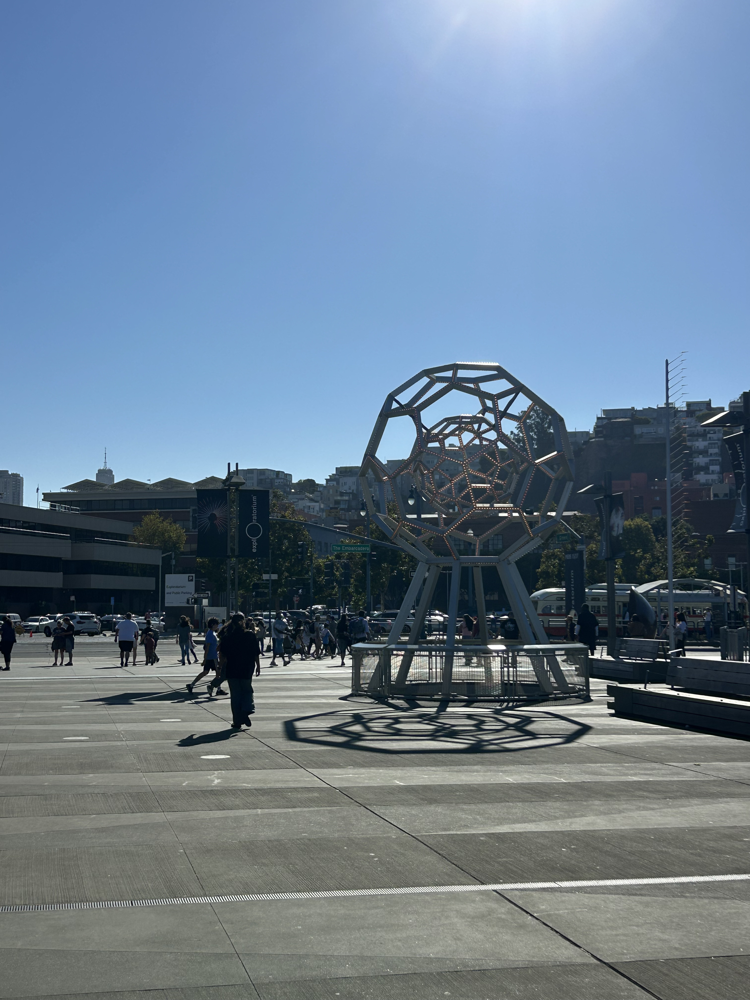
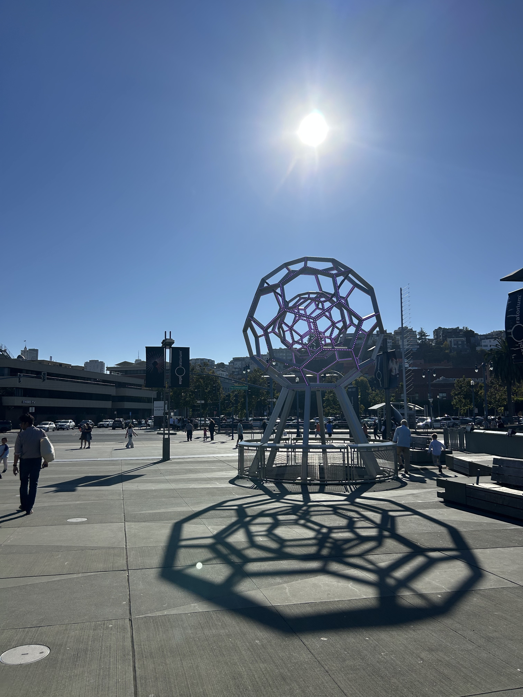

Project 0: Becoming Friends with Your Camera
Part 1: Selfie: The Wrong Way vs. The Right Way
Close-up Shot

Close-up selfie image
Zoom Shot

Further zoomed image
It seems that with a close-up selfie shot, the face is slightly distorted due to the short distance between our face and the camera lens. Our cameras may pick up more on the features that are closer to the lens itself (like the nose) and stretch features that are further away. However, when we step back and then zoom in with the camera lens, the distance no longer picks up on super close features and may achieve a generally more flat appearance, and maintain these facial proportions even when we zoom in closer from further away.
Part 2: Architectural Perspective Compression
Zoom Shot
Zoomed in from further away
No Zoom Shot
No zoom from a closer distance
Here, I took pictures right outside of the Exploratorium in SF! Similarly to the selfie portrait example, zooming in on an urban environment from further away may allow the camera lens to pick up less on closer and further details of buildings and other objects in the setting, creating a more flattened and compressed appearance. This may help explain why the image to the left looks flatter especially if we look at the shadow and shape of the monument. The closer we move to objects in the environment, the more distorted the scene may appear. In the image to the right, the shadow of the monument is far more extended and less compressed.
Part 3: The Dolly Zoom
Dolly Shot

My boba panda stuffed animal